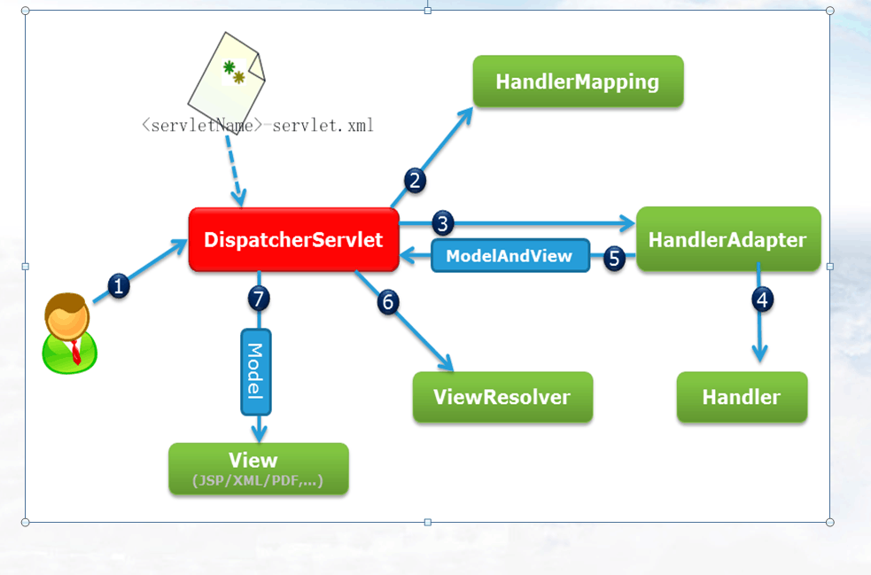

MVC和webMVC的区别
Model(模型)
数据模型,提供要展示的数据,因此包含数据和行为,行为是用来处理这些数据的。不过现在一般都分离开来:Value Object（数据） 和 服务层（行为）。也就是数据由实体类或者javabean来提供,行为由service层来提供.
View(视图)
负责进行模型的展示,一般就是我们见到的用户界面,客户想看到的东西。
Controller(控制器)
接收用户请求,委托给模型进行处理,处理完毕后把返回的模型数据交给给视图。也就是说控制器在中间起到一个调度的作用。
在标准的MVC中,模型能主动推数据给视图进行更新(可以采用观察者设计模式实现,在模型上注册视图,当模型更新时自动更新视图),但在Web开发中模型是无法主动推给视图,即无法主动更新用户界面,因为在Web的访问是请求-响应的模式。必须由客户端主动发出请求后,服务器才能把数据返回。
MVC和三层架构的区别
MVC是属于三层架构中的表示层的一个框架，M相当于javabean，V相当于jsp，而C就相当于Servlet
SpringWebMVC概述(SpringMVC)
SpringWebMVC简称SpringMVC
SpringMVC就是Spring框架提供的一个模块,通过实现MVC模式来很好地将数据、业务与展现进行分离,SpringMVC框架的目的是要简化我们日常的Web开发。
SpringMVC框架跟其他的WebMVC框架一样,都是*请求驱动*,并且设计围绕一个能够分发请求到控制器以及提供其他加快web应用开发功能的核心Servlet(叫做DispatcherServlet,即前端控制器)。Spring的DispatcherServlet实现比其他框架中还要多的功能。它和spring的ioc容器完全整合,并且允许使用spring中其他的所有功能。
SpringMVC框架设计的一个核心的原则就是"开闭原则",对扩展开放,对修改关闭.所以SpringMVC框架中很多方法都是final的,不允许用户随意覆盖,但是却提供给用户很多可扩展的机制(springmvc提供了很多接口)。SpringMVC目前已经成为非常流行的web应用的框架。
通过这张图我们来认识SpringMVC框架的核心组件

1.DispatcherServlet这是Spring提供的一个核心Servlet可以将请求分发给不同的Handler进行处理，用法很简单啊，在web.xml文件中配置一下就可以了
例如：
<servlet>
<servlet-name>SpringMVC</servlet-name>
<servlet-class>org.springframework.web.servlet.DispatcherServlet</servlet-class>
<load-on-startup>1</load-on-startup>
</servlet>
<servlet-mapping>
<servlet-name>SpringMVC</servlet-name>
<url-pattern>*.action</url-pattern>
</servlet-mapping>
这个类是与指定要读取的配置文件有关的，类中的许多方法取决于你的配置，在配置文件中配置的HandlerMapping: 处理器映射器，HandlerAdaptor:处理器适配器是与这个类的初始化有关的
⬇
2.HandlerMapping: 处理器映射器。DispatcherServlet接收到客户端请求的URL之后,根据一定的匹配规则,再把请求转发给对应的Handler,这个匹配规则由HandlerMapping决定。
也就是说转发请求给哪个handler处理是取决于HandlerMapping的映射关系的，一般来说我们使用默认的根据url和处理器名字进行匹配<bean class="org.springframework.web.servlet.handler.BeanNameUrlHandlerMapping">
⬇
3.HandlerAdaptor:处理器适配器。处理器适配器用来适配每一个要执行的Handler对象。通过HandlerAdapter可以支持任意的类作为处理器，一般来说我们使用默认适配器，可以处理的是实现了Controller接口的控制器对象【实现
Controller接口的控制器】<bean class="org.springframework.web.servlet.mvc.SimpleControllerHandlerAdapter"/>这个类中定义了方法，可以分析处理器映射器映射到的handler是否是Controller的实现类，可以调用Controller的实现类中的
handleRequest方法。这个适配器可以仿照默认的自己写一个，可以实现让任意一个类来做处理器。以下是默认处理器适配器部分源码
public class SimpleControllerHandlerAdapter implements HandlerAdapter {
/*先判断handler是不是一个处理器*/
@Override
public boolean supports(Object handler) {
return (handler instanceof Controller);
}
@Override
public ModelAndView handle(HttpServletRequest request, HttpServletResponse response, Object handler)throws Exception {
/*指定调用handler中的handleRequest方法*/
return ((Controller) handler).handleRequest(request, response);
}
}
4.根据源码我们可以发现，实际上是HandlerAdaptor帮我们调用了Handler中的方法Controller/Headler: 控制器/处理器。开发人员自定义,用来处理用户请求的,并且处理完成之后返回给用户指定视图的对象。
例如一个简单的Handler：
//控制器、处理器
//用来接收前端控制器发送过来的请求，并且处理请求返回模型视图对象。
public class HelloController implements Controller{
@Override
public ModelAndView handleRequest(HttpServletRequest request,
HttpServletResponse response) throws Exception {
//操作和原来servlet是一样的
//模型和视图对象
ModelAndView mv = new ModelAndView();
//往模型对象中存放值
mv.addObject("name", "tom");
//指定跳转页面的逻辑视图名
//mv.setViewName("/WEB-INF/jsp/hello.jsp");
mv.setViewName("hello");
return mv;
}
}
⬇
5.ViewResolver:视图解析器。Handler返回的是逻辑视图名,需要有一个解析器能够将逻辑视图名转换成实际的物理视图。而且Spring的可扩展性决定了视图可以由很多种,所以需要不同的视图解析器,解析不同的视图。但是一般由jsp充当视图的情况居多一般来说还是使用默认的居多
<!-- 将逻辑视图名变为要访问的资源地址 -->
<bean
class="org.springframework.web.servlet.view.InternalResourceViewResolver">
<!-- 配置jstl相关内容 -->
<property name="viewClass"
value="org.springframework.web.servlet.view.JstlView" />
<!-- 给逻辑视图名加前缀 -->
<property name="prefix" value="/WEB-INF/jsp/" />
<!-- 给逻辑视图名加后缀 -->
<property name="suffix" value=".jsp" />
</bean>⬇
SpringMVC框架提供一个核心的Servlet对象(DispatcherServlet,前端控制器)来对服务器接收到的请求进行解析,当这个请求被DispatcherServlet获取到之后,DispatherServlet需要根据HandlerMapping对象的映射关系,将这个请求转交给真正能够处理客户端请求的Controller控制器(我们要写的就是这个东西,相当于之前的servlet)来处理。Controller处理完成后返回ModelAndView对象,也就是模型和视图的结合体。ViewResolver视图解析器根据ModelAndView中的逻辑视图名找到真正的物理视图,同时使用ModelAndView中模型里面的数据对视图进行渲染。最后把准备好的视图展现给用户
SpringMVC框架在项目中的搭建
第一步：构建Web项目
第二步：导入所需jar包
第三步：配置前端控制器DispatcherServlet
第四步：编写Controller控制器(也称为Handler处理器)
第五步：配置处理器映射器(可省去,有默认配置)
第六步：配置处理器适配器(可省去,有默认配置)
第七步：配置视图解析器(可省去,有默认配置,但是前缀和后缀都为"")
第八步：配置控制器/处理器
1)构建Web项目
在自己Eclipse中创建一个动态web项目(DynamicWebProject),注意JDK版本和项目版本的选择
2)导入所需的jar包
在lib目录下放入如下jar包,这是初始jar包,根据后续需求会陆续加入jar包
commons-logging-1.2.jar
spring-beans-4.3.7.RELEASE.jar
spring-context-4.3.7.RELEASE.jar
spring-core-4.3.7.RELEASE.jar
spring-expression-4.3.7.RELEASE.jar
spring-web-4.3.7.RELEASE.jar
spring-webmvc-4.3.7.RELEASE.jar
3)配置前端控制器DispatcherServlet以及需要读取的xml配置文件
SpringMVC的前端控制器就是一个Servlet对象,继承自HttpServlet,所以需要在web.xml文件中配置。
SpringMVC是Spring提供的一个模块,Spring所有的模块都是基于Spring IOC功能的。所以SpringMVC的DispatcherServlet对象在初始化之前也会去实例化Spring的容器对象（ApplicationContext）,那么就需要读取Spring的配置文件。
默认SpringMVC会在你web应用的WEB-INF目录下查找一个名字为[servlet-name]-servlet.xml文件,并且创建在这个文件中定义的bean对象。
如果你提供的spring配置文件的名字或者位置和默认的不同,那么需要在配置servlet时同时指定配置文件的位置。
例如:
<servlet>
<servlet-name>SpringMVC</servlet-name>
<servlet-class>org.springframework.web.servlet.DispatcherServlet</servlet-class>
<load-on-startup>1</load-on-startup>
</servlet>
<servlet-mapping>
<servlet-name>SpringMVC</servlet-name>
<url-pattern>*.action</url-pattern>
</servlet-mapping>
如上配置,框架会自动去当前应用的WEB-INF目录下查找名字为SpringMVC-servlet.xml文件(默认前缀和<servlet-name>标签中的值一致)。
也可以自己指定配置文件的名字和位置:
<servlet>
<servlet-name>SpringMVC</servlet-name>
<servlet-class>org.springframework.web.servlet.DispatcherServlet</servlet-class>
<init-param>
<param-name>contextConfigLocation</param-name>
<param-value>classpath:spring-web-mvc.xml</param-value>
</init-param>
<load-on-startup>1</load-on-startup>
</servlet>
<servlet-mapping>
<servlet-name>SpringMVC</servlet-name>
<url-pattern>*.action</url-pattern>
</servlet-mapping>
注意:
配置文件在WEB-INF下:
<param-value>/WEB-INF/spring-web-mvc.xml</param-value>
配置文件在classpath下:
<param-value>classpath:spring-web-mvc.xml</param-value>
注意:
<url-pattern>*.action</url-pattern>
也可以配置成
<url-pattern>/</url-pattern>
注意:这里是/ 不是/*,后面会说明它们之间的区别
4)编写Controller控制器(headler)并且在xml中配置
<!-- 配置Controller处理器 -->
<bean name="/hello.action"
class="com.briup.controller.HelloController"></bean>
5)配置映射器(可省去,有默认配置)
<bean class="org.springframework.web.servlet.handler.BeanNameUrlHandlerMapping"/>
6)配置适配器(可省去,有默认配置)
想要正确运行自定义处理器,需要配置处理器适配器,在spring的配置文件中(就是本例中的SpringMVC-servlet.xml),进行如下配置：
<bean class="org.springframework.web.servlet.mvc.SimpleControllerHandlerAdapter"/>
SimpleControllerHandlerAdapter：表示所有实现了org.springframework.web.servlet.mvc.Controller接口的Bean可以作为SpringMVC中的处理器。如果需要其他类型的处理器可以通过实现HadlerAdapter来解决。
7)配置视图解析器(可省去,有默认配置,但是前缀和后缀都为"")
当处理器执行完成后,返回给spring容器一个ModelAndView对象,这个对象需要能够被解析成与之相对应的视图,并且使用返回的Model数据对视图进行渲染。
<bean class="org.springframework.web.servlet.view.InternalResourceViewResolver">
<property name="viewClass" value="org.springframework.web.servlet.view.JstlView"/>
<property name="prefix" value="/WEB-INF/jsp/"/>
<property name="suffix" value=".jsp"/>
</bean>
如果配置设置为如上操作,那么在自定义的Handler中返回的逻辑视图的名字不能有后缀.jsp,并且具体页面一定放在/WEB-INF目录下。
InternalResourceViewResolver：用于支持Servlet、JSP视图解析；
viewClass：JstlView表示JSP模板页面需要使用JSTL标签库,classpath中必须包含jstl的相关jar包；
prefix和suffix：视图页面的前缀和后缀(前缀+逻辑视图名+后缀),比如传进来的逻辑视图名为hello,则该该jsp视图页面应该存放在"WEB-INF/jsp/hello.jsp"
注意:放在WEB-INF下的页面,只能通过内部跳转的方式访问到,因为客户端访问不到WEB-INF目录,而且服务器端可以访问到WEB-INF目录
注意:需要引入jstl相关jar包
注意:页面中的路径问题
相对路径
<%
String path = request.getContextPath();
String basePath = request.getScheme()+"://"+request.getServerName()+":"+request.getServerPort()+path+"/";
%>
<base href="<%=basePath%>" />
8)配置处理器
把编写好的handler/controller在spring中进配置,让其接受Spring IoC容器管理
<bean name="/hello.action" class="com.briup.web.controller.HelloWorldController"/>
现在我们来处理DispatcherServlet中的映射路径问题
<servlet>
<servlet-name>SpringMVC</servlet-name>
<servlet-class>org.springframework.web.servlet.DispatcherServlet</servlet-class>
<load-on-startup>1</load-on-startup>
</servlet>
<servlet-mapping>
<servlet-name>SpringMVC</servlet-name>
<url-pattern>/</url-pattern>
</servlet-mapping>
1)拦截所有请求 /
<url-pattern>/</url-pattern>
此处需要特别强调的是,配置中使用的是/,而不是/*,如果使用/*,那么请求时可以通过DispatcherServlet转发到相应的Controller中,但是Controller返回的时候,如返回的jsp还会再次被拦截,这样导致404错误,即访问不到jsp。
拦截/,例如：/user/add
将来可以实现REST风格的访问
弊端：会导致静态文件（jpg,js,css）被拦截后不能正常显示。
拦截/*,请求可以走到Controller中,但跳转到jsp时再次被拦截,不能访问到jsp,可以说这是错误的配置。
2)自定义拦截请求的后缀名
拦截*.do、*.html、*.action, 例如/user/add.do
这是最传统的方式,最简单也最实用。不会导致静态文件（jpg,js,css）被拦截。
弊端:
Controller的后缀只能固定成某一个
将来不便于实现REST风格的访问
3)静态资源的访问,如jpg,js,css
如果DispatcherServlet拦截"*.do"这样的有后缀的URL,就不存在访问不到静态资源的问题。
如果DispatcherServlet拦截"/",为了实现REST风格,拦截了所有的请求,那么同时对*.js,*.jpg等静态文件的访问也就被拦截了。
例如:
<link href="static/css/hello.css" rel="stylesheet" type="text/css"/>
<script type="text/javascript" src="static/js/hello.js"></script>
<img alt="none" src="static/images/logo.png">
解决方式一：利用Tomcat的defaultServlet来处理静态文件
<servlet-mapping>
<servlet-name>default</servlet-name>
<url-pattern>*.jpg</url-pattern>
</servlet-mapping>
<servlet-mapping>
<servlet-name>default</servlet-name>
<url-pattern>*.js</url-pattern>
</servlet-mapping>
<servlet-mapping>
<servlet-name>default</servlet-name>
<url-pattern>*.css</url-pattern>
</servlet-mapping>
或者:
<servlet-mapping>
<servlet-name>default</servlet-name>
<url-pattern>*.css</url-pattern>
<url-pattern>*.js</url-pattern>
<url-pattern>*.png</url-pattern>
</servlet-mapping>
特点：1.要配置多个，每种文件配置一个。
2.要写在DispatcherServlet的前面(和tomcat版本有关),让defaultServlet先拦截请求, 这样请求就不会进入Spring了
3. 高性能。
解决方式二: 使用<mvc:resources>标签,例如:
<mvc:resources mapping="/images/**" location="/images/"/>
<mvc:resources mapping="/js/**" location="/js/"/>
<mvc:resources mapping="/css/**" location="/css/"/>
mapping： 映射
两个*,表示映射指定路径下所有的URL,包括子路径
location：本地资源路径
这样如果有访问/images或者/js或者/css路径下面的资源的时候,spring就不会拦截了
解决方式三: 使用<mvc:default-servlet-handler/>标签
在spring配置文件中加入此标签配置即可
最后是一个spring提供的编码过滤器（这是Springmvc提供的过滤器）
查看这个过滤器类源码便可知这里所传的俩个参数的作用
<filter>
<filter-name>CharacterEncodingFilter</filter-name>
<filter-class>org.springframework.web.filter.CharacterEncodingFilter</filter-class>
<init-param>
<param-name>encoding</param-name>
<param-value>UTF-8</param-value>
</init-param>
<init-param>
<param-name>forceEncoding</param-name>
<param-value>true</param-value>
</init-param>
</filter>
<filter-mapping>
<filter-name>CharacterEncodingFilter</filter-name>
<url-pattern>/*</url-pattern>
</filter-mapping>